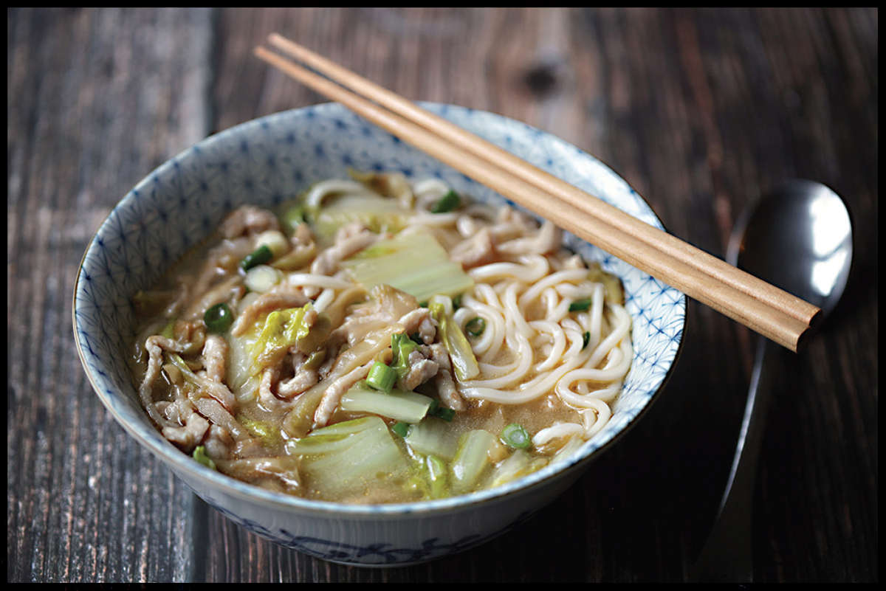

ZHA CAI ROUSI MIÀN (SICHUAN PORK AND PICKLE SOUP)
|
Yield Serves 4 to 6 |
Active Time 15 minutes Total Time 30 minutes |
You can use extra-firm tofu in place of pork or chicken (omit the washing step in step 1 and gently toss with the marinade instead of roughly massaging). Zha cai is spicy pickled mustard stem. It is similar to its cousin (pickled mustard leaves) but with a more pungent, radish-like aroma, You can find it either whole in the refrigerated section of a Chinese supermarket, in cans, or slivered in cans, jars, and pouches. If you can’t find it, you can use sauerkraut or kimchi in this soup for something that, while different, is nonetheless delicious. This soup is great with or without the noodles added.
This is a simple but classic Sichuan soup made with pickled mustard stem (zha cai), slivered pork, and noodles. The combination of pork, pickled crunchy vegetables, and a starchy supporting actor reminds me an awful lot of kapustnyak, the Ukrainian soup of sauerkraut, pork, and potatoes. So much so that on the rare occasion that I don’t have zha cai on hand, I find that sauerkraut is the most natural substitute for it.
You can use store-bought chicken broth or Everyday Chicken and Ginger Stock (here) for it. Using Superior Stock is definitely not traditional and may feel like overkill, but man is it tasty. Use whatever stock you have on hand; the rest of the dish is very straightforward.
DIRECTIONS
For the Pork:
6 ounces (170 g) pork loin, pork sirloin, or chicken breast, cut into thin slivers (see Notes)
1 teaspoon (5 ml) Shaoxing wine or dry sherry
1 teaspoon (5 ml) light soy sauce or shoyu
¼ teaspoon (0.5 g) freshly ground white pepper
Kosher salt
Pinch of MSG (optional)
1 teaspoon (3 g) cornstarch
For the Soup:
Kosher salt
1 tablespoon (15 ml) peanut, rice bran, or other neutral oil
6 ounces zha cai, thinly slivered into sizes similar to the pork (see Notes)
1½ quarts (1.5 l) Superior Stock (here), Everyday Chicken and Ginger Stock (here), or store-bought low-sodium chicken stock simmered for 10 minutes with a few slices of ginger and roughly chopped scallions
8 ounces (225 g) bok choy, baby bok choy, Chinese broccoli (gai lan), or Napa cabbage, cut into bite-sized pieces
Freshly ground white pepper
8 ounces (225 g) fresh wheat noodles
3 scallions, sliced
DIRECTIONS
1 For the Pork, Chicken, or Tofu: Place the pork or chicken in a medium bowl, cover with cold water, and vigorously agitate it. Drain through a fine-mesh strainer set in the sink and press on the pork with your hands to remove excess water. Return the pork to the bowl. Add the wine, soy sauce, white pepper, a pinch of salt, the MSG (if using), and the cornstarch. Roughly work the marinade into the meat for at least 30 seconds. Set aside to marinate for at least 15 minutes and up to overnight.
2 For the Soup: Bring a pot of salted water to a boil over high heat. Meanwhile, heat a wok over high heat until lightly smoking. Add the oil and swirl to coat. Add the pork and stir-fry until no longer pink and lightly browned around the edges, about 2 minutes. Add the zha cai and stir-fry for 1 minute. Add the stock and bok choy. Bring to a simmer and season to taste with salt and white pepper.
3 When the pot of water is boiling, cook the noodles according to the package directions. Divide the noodles between bowls. Divide the broth, pork, pickles, and bok choy between the bowls. Sprinkle with scallions and serve immediately.
